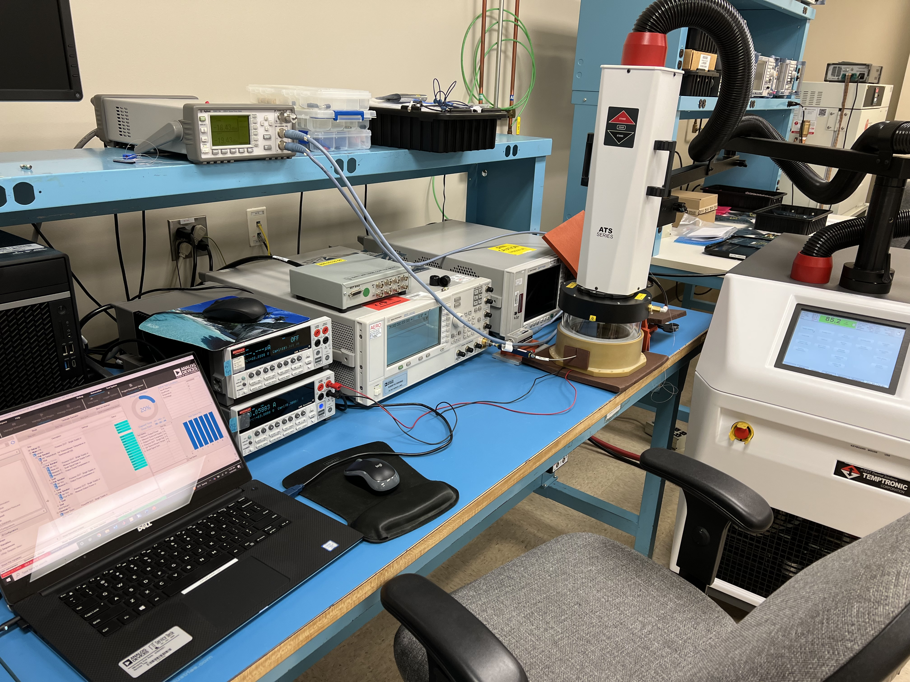
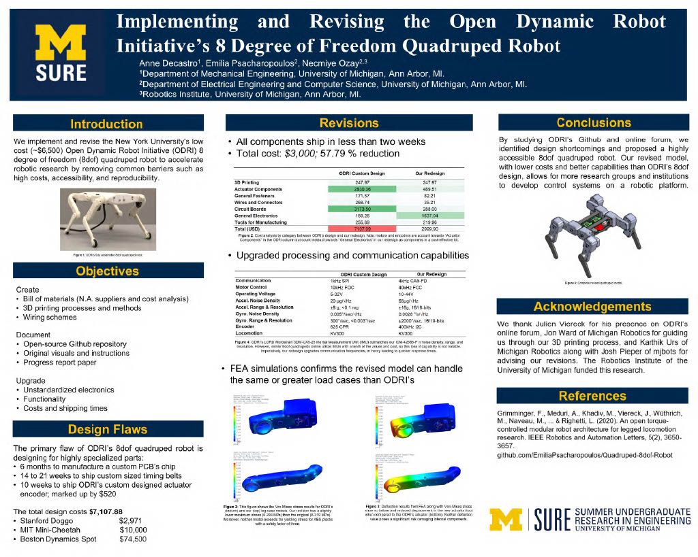

WORK EXPERIENCE
Analog Devices, Inc. • Product/ Test Engineering Intern • Summer 2022
I joined Analog’s Aerospace and Defense team this summer to automate their Radio Frequency (RF) characterization data-taking process. ADI’s industry-leading Integrated Circuits (ICs) are sold to the leading satellite communications companies such as Spacex and Blue Origin. In addition to the world of RF test engineering, this experience has exposed me to the groundbreaking technologies currently driving the 5G revolution.
My main task involves standardizing all characterization data-taking to a single, well supported and capable platform: Zero Code GUI (ZCG) by Soliton Technologies. I am developing National Instruments (NI) LabVIEW scripts, in conjunction with ZCG’s automation, to replicate manually-taken RF characterization data on various ADI technologies. My work verifies the capabilities and efficiency that naturally follows from automation, and will be repurposed to characterize additional technologies in the future.
In addition to my primary assignment, I develop various computer programs in MATLAB, Python, or NI’s O+ to accelerate ADI’s data processing. For example, I wrote a program to generate radiation performance reports that parses through enormous quantities of performance data and produces tables displaying the statistics of desired registers. Also, I programmed another parser that sifts through data points across hundreds of raw data files to compile a few key spreadsheets and hundreds of plots that synthesize results for the design team. The automation of these processes have saved days and sometimes months of work for the senior engineering team.

University of Michigan • Robotics Research Engineering Intern • Summer 2021
I collaborated on an interdisciplinary team of graduates and undergraduates to contribute to the Open Dynamic Robot Initiative (ODRI). ODRI focuses on developing a low cost, open sourced quadruped robot as a platform for researchers around the world to develop control systems. Robotics historically has an incredibly high barrier to entry, whether from an education or financial cost basis, and these advanced 3D printed robots with many degrees of freedom, great sensing capabilities, and online support provide great opportunities to globally expand the field.
Our research goal was to implement and revise ODRI’s quadruped robot. I enhanced ODRI’s technical documentation with a statistical cost analysis, detailed wiring schematics, circuit assembly tutorials, and an original bill of materials on GitHub to inform our research progress to other researchers. Additionally, I led our team’s system redesign of the robot’s electrical components, circuitry, computing, communication, and motor control. My method of replacing ODRI’s highly specialized PCBs with generic control platforms ultimately quadrupled ODRI design’s communication capabilities and motor control bandwidth while reducing cost by 91.02%. We summarized our mechanical and electrical redesigns in a research paper supported, and presented the results at Michigan’s Summer Undergraduate Research in Engineering (SURE) symposium.

NAVSEA • Engineering Technician Intern • Summer 2020
I compiled and synthesized hundreds of testing documents into executive summaries conveying lessons learned to Navy leadership in PMS 406 – Unmanned Maritime Systems. Additionally, I collaborated with senior engineers to organize a multi-day leadership conference for Unmanned Undersea Vehicle (UUV) Homeport program managers. The Strategic Capabilities Office (SCO) marked my communication and documentation skills as exceptional.
The George Washington University • Engineering Intern • Summer 2018
I assisted material science PhD students in researching hydrophobic aluminum treatment methods to prevent the hulls of arctic-bound container ships from cracking.